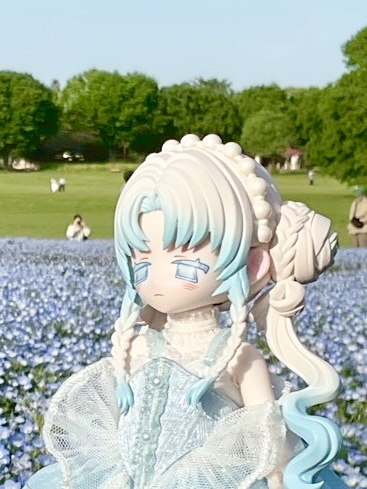
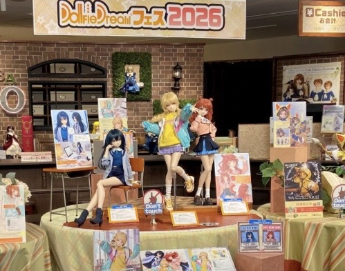
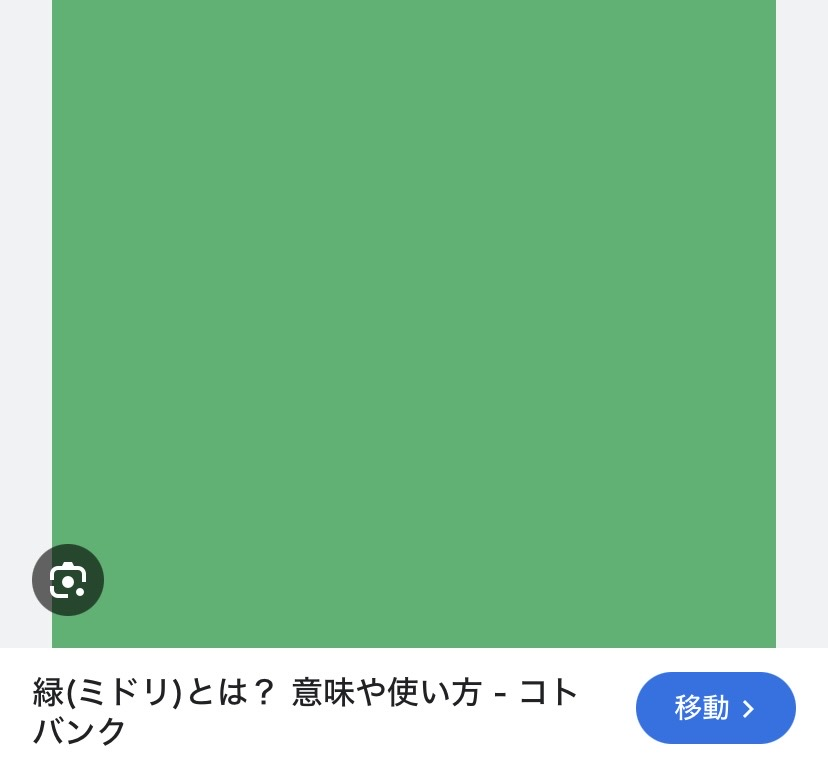

Life with Dolls
日々の生活を彩るドール。
あなただけの理想のドールを
見つけてみませんか。
Types Of Dolls
ドールには様々な種類があります。
大きく分けて３つ紹介します。
REAL
可愛らしい少女から大人の女性、 活発な少年から青年まで、 あなたのイメージ通りに変身できる 美しいドールです。

ANIME
フィギュアとドールと双方の魅力を持ちます。独自のキャラクター表現も大きな魅力の一つです。

BLIND
箱を開けるまで中身が分からないブラインド形式で発売されている小さなドールです。 比較的安価で初心者におすすめ。
SHOP
ボークス
天使の窓
関東最大のスーパードルフィー(SD)の専門店。
ボークス
DollPoint 秋葉原
関東最大のスーパードルフィー(SD)の専門店。

Customize
お顔や瞳の色、ボディのサイズ、服や髪などカスタマイズは自由自在。あなただけのドールに作り上げましょう。

Photograph
同じ顔をしているのに場所や日の当たり方、撮る角度によって違う顔を見せてくれるのがドールの魅力です。